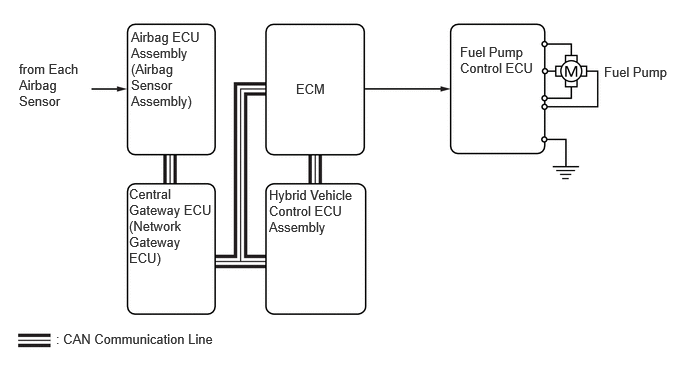

| Last Modified: 10-07-2025 | 6.11:8.1.0 | Doc ID: NM100000002KCMI |
| Model Year Start: 2024 | Model: Tacoma HV | Prod Date Range: [03/2024 - ] |
| Title: T24A-FTS (ENGINE CONTROL): SFI SYSTEM (for 1Motor-HEV Model): FUEL PUMP CONTROL (FOR LOW-PRESSURE PUMP); 2024 - 2026 MY Tacoma HV [03/2024 - ] | ||
FUEL PUMP CONTROL (FOR LOW-PRESSURE PUMP)
OPERATION
(a) The fuel pump control ECU receives an operation request signal (duty signal) from the ECM and operates the fuel pump.
(b) Three-phase Pulse Width Modulation (PWM) control is used for the fuel pump control ECU to steplessly adjust the rotation of the fuel pump speed. Due to this control, the fuel pump can be operated at the optimal speed for the required fuel flow, reducing power consumption and improving fuel efficiency.
(c) In addition to when the engine is stopped, the fuel pump is stopped when any of the Supplemental Restraint System (SRS) airbags have deployed, minimizing fuel leakage.
